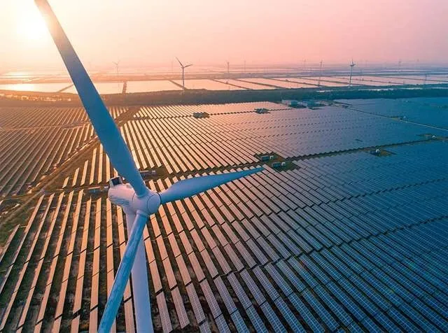
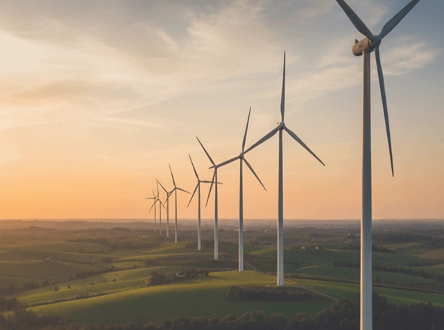
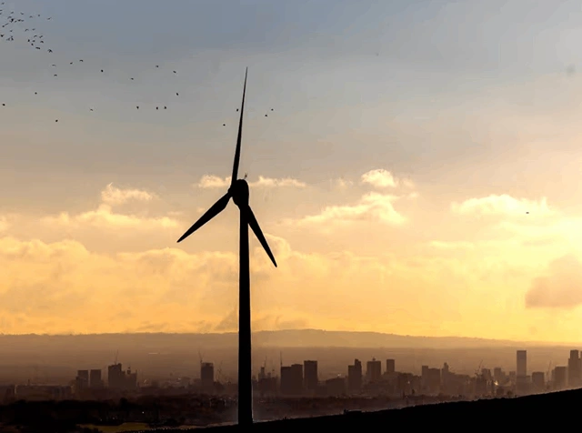

The UK has achieved a major turning point on its path to a sustainable future with the government's support for huge new onshore wind projects all around England.This big change in policy means that the renewable energy sector is coming back to life after years of slow growth.The current government is not only meeting the urgent need to decarbonize the grid by putting indigenous energy first, but it is also making sure that the English landscape plays a bigger part in the country's clean power mission.This shift is one of the biggest changes to land-based wind generation in a long time, and it clearly goes against the planning rules that were in place before.
The UK government has recently made a big decision to improve the national energy system by giving money to 190 green energy projects.One of these is the largest onshore wind farm built in England in over 10 years.This huge amount of assistance, which came through the most recent Contracts for Difference auction, gives developers the financial security they need to start a wide range of projects.There were a lot of discussions about solar and tidal energy, but the return of onshore wind is the most important part of this news.The 190 projects will power millions of homes, which will greatly reduce the country's dependency on unstable international gas markets.



English wind energy has been in the works for ten years
The approval of the Imerys project in Cornwall is without a doubt the most important part of this legislative victory.The building of this wind farm, which is the largest onshore wind farm built in England in more than ten years, is a sign of the industry's revival.For almost 10 years, a de facto restriction on these kinds of projects meant that England's wind potential was mostly unused compared to its neighbors.The government's decision to support this project shows that they are once again confident in the efficiency and cost-effectiveness of modern wind turbines, which are far quieter and more powerful than the ones that were put up in the early 2010s.
Stronger economies and greener neighborhoods
The government's support for huge new onshore wind farms all throughout England has big economic effects on rural and coastal areas, in addition to the environmental benefits.These initiatives will produce thousands of high-skilled employment in engineering, construction, and long-term maintenance.Also, the subsidy mechanism makes sure that the energy produced stays inexpensive for people in the UK.By getting these 190 green energy projects off the ground, the government is protecting the UK economy from price shocks around the world while also putting money into community-owned energy projects and local infrastructure.
Making the Path to Net Zero by 2030 Stronger
The UK government is giving money to 190 green energy projects, which helps the ambitious goal of having a clean electrical system by the end of the decade.This most recent round of funding shows that the switch to renewable energy is no longer just a dream; it is now a funded reality.By including the largest onshore wind farm built in England in over ten years in the national strategy, officials are showing that every corner of the UK has a part to play.The mix of solar, wind, and new tidal technologies will provide the country with a stable and long-lasting energy supply for many years to come.